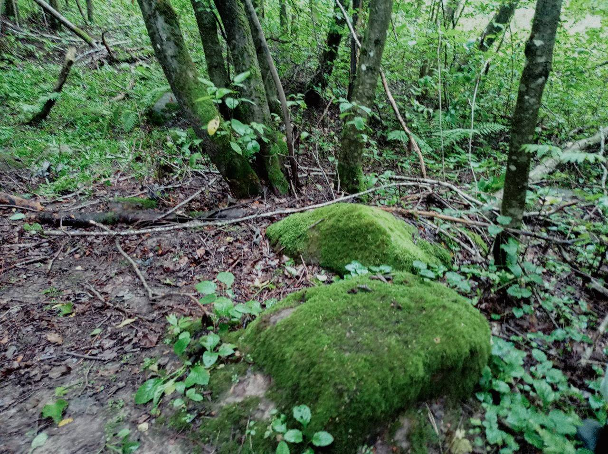
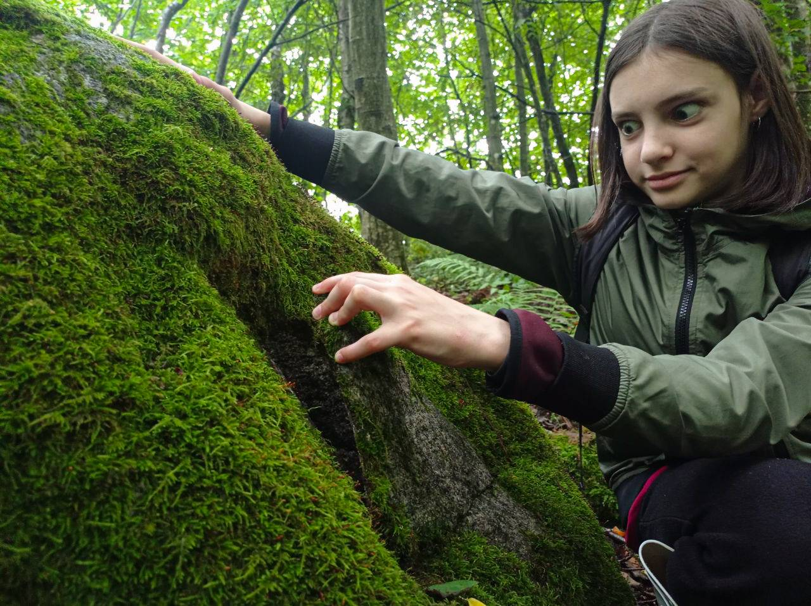
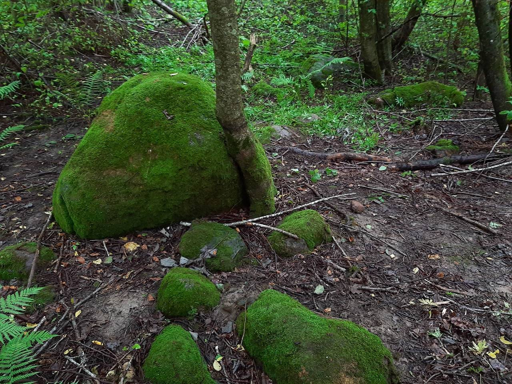
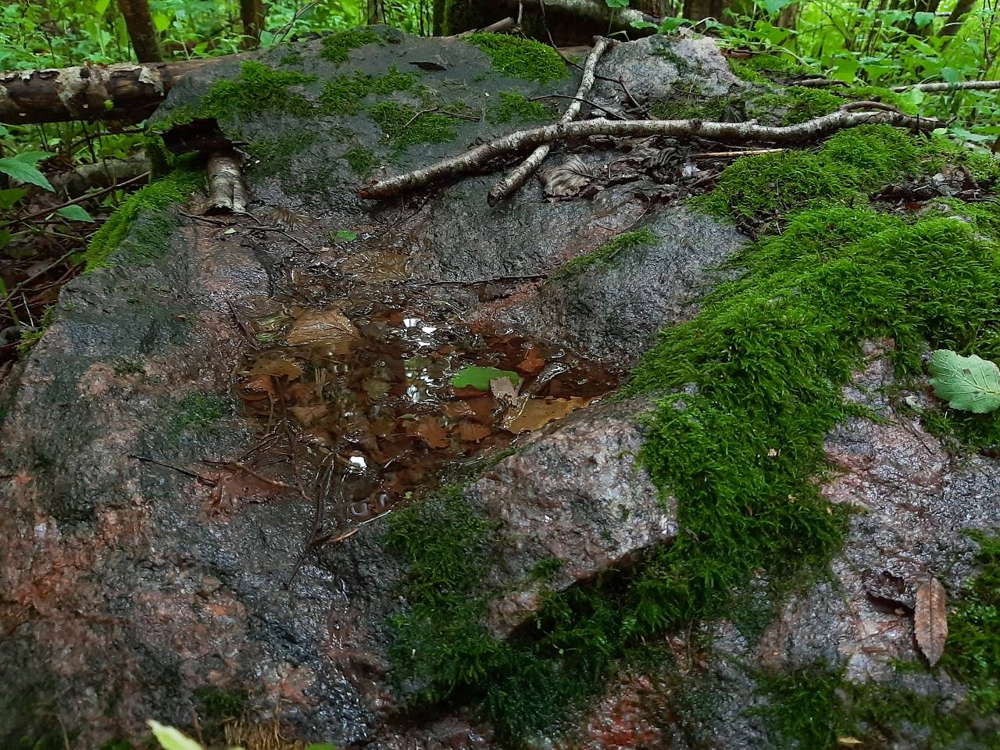

Гэтае месца ўтоена ад людскіх вачэй, таму што з'яўляецца па-сапраўднаму незвычайным. Пакуль вы будзеце да яго прабірацца, вам сустрэнецца процьма камароў і машкары. Калі вы пройдзеце ў траве па пояс па квітнеючым лузе, а потым па зарасніках у пералеску (асабліва пасля дажджу), вы будзеце выглядаць, як чалавек, які плаваў у вопратцы. Настойліва рэкамендуем назапасіць рэпеленты, гумовыя боты і адвагу. Нягледзячы на ўсё, паверце, гэта таго варта! 
Па дарозе да чароўнага месца, вы можаце назіраць мноства цікавых аб'ектаў. Адным з іх з'яўляюцца тры ўзгоркі. Хоць гучыць гэта даволі проста, легенда аб гэтай мясцовасці зусім няпростая
Тры ўзгорка - тры вяршыні. Апошняя (трэцяя) гара называецца "Гара духаў". Другая - "Жаночая гара". І самая першая «Дзедава гара». Гэтыя ўсе горы разам - «Каўкас» (націск на першы склад). З літоўскай мовы «Каўкас» перакладаецца як «чорт». У павер'і беларусаў "Каўкі" (галкі) – душы нашых продкаў. Менавіта пра душу аднаго з іх апавядае легенда гэтага ўнікальнага месца, запісаная са слоў мясцовых старых краязнаўцам Алесем.
«У далёкія часы ў гэтых месцах развялося мноства змей. Людзі не ведалі, як з імі дужацца. Аднойчы тут праходзіў жабрак, а па павер'ях яны мелі сувязь з багамі. Ён сказаў: «Я выбаўлю вас ад змей, толькі дазвольце мне тут пасяліцца». І людзі пагадзіліся. Змеі зніклі, жабрак пабудаваў хаціну, сваімі чарамі адрадзіў крыніцу з гаючай вадой, і лячыў людзей травой і вядзьмарствам. Людзі яму дзякавалі, часам ежай, часам грашыма. На гэта ён і жыў.
 
Аднойчы ноччу да яго прыйшоў мужчына, у якога памірала жонка ў родах. Ён кінуўся да ног з маленнем аб дапамозе. Дзед сказаў: "Добра, я зараз прыгатую лекі, а ты пабудзь на вуліцы, але толькі запомні, што б ні адбылося, не зазірай у хаціну!".

Сам дзед пайшоў варыць зелле, а мужчына ў чаканні глядзеў на акно з фіранкай. І тут бачыць - уся хата знутры азараецца яркімі агнямі. Чырвонымі, жоўтымі, сінімі... Вельмі цікава яму стала. Не паслухаўшы ўказання дзеда, ён адсунуў фіранку. Не паспеўшы нічога ўбачыць, мужчына ўвесь загарэўся полымем. Кінуўся да крыніцы, каб затушыць агонь. Тут жа ўдарыў маланкай Пярун - бог грому і маланкі - і ўсё скамянела. І дом, і крыніца, і дзед.З гэтага часу тут і стаіць камень - былы дом ведзьмара. А трохкутная частка, якая вымаецца з каменя - фіранка, якую некалі адсунуў мужчына. Крыніца таксама скамянела. Нават у спякоту ў выемцы каменя стаіць вада, па павер'і, гаючая. Побач вялізны столападобны камень - ложак ведзьмара, на якім ён спаў улетку.
Ні ў якім разе нельга прыходзіць на гэтае месца ў Купальскую ноч і дзень зімовага сонцастаяння. Але многія прыходзяць, «адсоўваюць фіранку» і назаўжды ператвараюцца ў камень. І сапраўды, камянёў вакол вельмі шмат…
Запісал Алекс Працкевіч